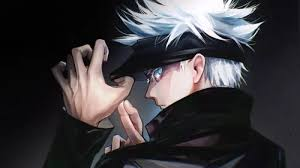

Sobre
Jujutsu Kaisen é um anime que mistura ação, sobrenatural e muita emoção. A história segue Itadori Yuji enquanto ele enfrenta maldições com seus amigos feiticeiros.
Personagens Principais

- Yuji Itadori

- Megumi Fushiguro

- Nobara Kugisaki

- Satoru Gojo

- Ryomen Sukuna